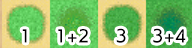

RPG MAKER MZ HELP
Documentation

Asset Standards
It is possible to use your own original files for all kinds of assets, such as images and audio.
By copying the asset file into the appropriate folder you can select the asset from the editor.
You can add and browse through subfolders under each asset folder. Folder names are recommended to be in half-width alphanumeric characters.
Image Assets
All images must be in the PNG format.
-
Battlebacks (img/battlebacks1, img/battlebacks2)
Images used as the backgrounds for the Battle Screen.
A battleback measures 1000x740 pixels in size. Backgrounds in the "battlebacks1" folder are primarily for floors, and those in the "battlebacks2" folder are primarily for walls. You can arrange these in any combination that you like in order to create your battleback.
The upper part of images in front-view battles and the lower part of images in side-view battles will be cropped when displayed. -
Front-View Enemies (img/enemies)
Images for enemies that are displayed in front-view battle. You can choose any size you want for the image.
*There is a possibility that images with a width (horizontal direction) that is an odd number will be blurred when displayed. Even numbers are recommended. -
Face (img/faces)
Images which are displayed in the Menu Screen and message windows.
Face images are 144x144 pixels in size, and arranged into 2 rows and 4 columns equaling 8 images. -
Parallax (img/parallaxes)
Images shown behind maps. You can choose any size you want for the image.
Like wallpaper, the top, bottom, left, and right sides of the image will be connected when you wish to loop the image.
Additionally, parallax files will be treated as floors (no parallax) when there is a "!" at the beginning of the file name. -
Pictures (img/pictures)
Images which are displayed by using event commands during the game. You can choose any size you want for the image.
*There is a possibility that images with a width (horizontal direction) that is an odd number will be blurred when displayed. Even numbers are recommended. -
Side-view Allies (img/sv_actors)
Actor images which are displayed in side-view battle.
Please refer to [Side-view Character Standards]. -
Side-View Enemies (img/sv_enemies)
Images for enemies that are displayed in side-view battle. You can choose any size you want for the image.
*There is a possibility that images with a width (horizontal direction) that is an odd number will be blurred when displayed. Even numbers are recommended. -
Tilesets (img/tilesets)
Images which consist of the tiles (also known as map chips) that make up a map.
-
Title Screen (img/titles1, img/titles2)
Images displayed on the Title Screen.
The size for these images is 816x624 pixels. Titles1 contains files for the main background, and titles2 contains images for frames, etc. Use these in any combination to create the Title Screen. -
Characters (img/characters)
Images shown for the characters on the map.
The size for a character image can be changed freely (normally 48x48 pixels), and consist of 4 directions (up, down, left, right) and 3 patterns for a total of 12 patterns that will be arranged in the provided order. A file for 1 character will be arranged into 2 rows and 4 columns, totaling 8 images. The size of the character will be calculated using 1/12 of the width and 1/8 of the height of this file. Moreover, characters will be shown 1/8 above a tile so they appear more natural when on top of buildings.- It is possible to treat 1 character as 1 file by including "$" at the beginning of the file name.
- Including a "!" at the beginning of the file name will prevent the image from being shifted 1/8 up, and bush elements will no longer make it appear half-transparent. This is primarily used for map objects such as doors and treasure chests.
- It is also possible to use the "$" and "!" special characters together.
-
System Images (img/system)
Various images used throughout the game.
- Baloon.png
- Asset used for actor chat balloons. The transparent area below the image is defined by the user.
- ButtonSet.png
- Button assets used with touch controls. These can be used for things like opening the menu, canceling, returning to previous, or changing the number of items when using the shop.
- GameOver.png
- Asset displayed on the Game Over Screen.
- IconSet.png
- Assets used for the icons for items, weapons, skills, etc.
- Shadow1.png
- Asset for the shadow displayed when flying a plane.
- Shadow2.png
- Asset for the shadows of allies in side-view battle.
- States.png
-
Asset for the states of allies in side-view battle.
- Weapons1.png, Weapons2.png, Weapons3.png
-
The weapon images that are displayed when allies perform normal attacks in side-view battle.
There are 12 different types of images for Weapons1 and Weapons2. Weapons3 is defined by the user. - Window.png
- Collection of image assets that compose the windows.
Tileset Details
A single tile is 48x48 pixels in size, and tiles need to be grouped in the 5 types of sets, A through E, below.
Additionally, the specifications for some tiles can change according to the contents set under [Mode] found in [Tilesets] in the database.
Tileset A
This set will be used as the lower layer when drawing the map. This set is divided further into 5 tiles, with most of them being called [Autotiles], which are composed of special tiles which have their boundary lines automatically created.
Autotiles are, as a rule, arranged in a pattern composed of 6 tiles as seen in the illustration below, making up the basic structure of the tiles.

-
a
Representative Pattern (for displaying in the tile palette)
-
b
Pattern with boundaries at each corner
-
c
Group Pattern (refers to group of tiles with one in the center and 1 in each of the 8 directions)
If the autotile located in the (8,8) position from the bottom-right is transparent, that autotile will be evaluated as a "forest type". If a forest tile has the bush element assigned to it, character images will not appear as half transparent in the 8 types of tiles below which includes the bottom right and bottom left boundaries.
A1 (Animations)
These are 768x576 pixels in size and made up of the 5-pattern blocks as in the illustration to the right. Basically, tiles in this part will not have a boundary created even if they touch.
Boats and ships can only travel through the tiles in this part. However, tiles in this tileset will no longer be able to be entered using boats and ships if the tileset is configured to allow players to walk on the tiles.

-
Block A
Autotiles used as ocean tiles. By placing 3 autotile basic patterns horizontally in a row, it is possible to animate them.
-
Block B
Autotiles used as deep sea tiles. Only tiles in this block can create a boundary line with ocean tiles when adjoined to A1 (Animation) tiles. Also, tiles in Block A will automatically fill in the transparent sections of this block. Just like in Block A, by placing 3 autotile basic patterns horizontally in a row, it is possible to animate them. Additionally, boats cannot travel through tiles in this block.
-
Block C
Autotiles which decorate ocean tiles in Block A. Tiles in Block A will automatically fill in the transparent sections of this block. Additionally, boats and ships cannot travel through tiles in this block.
-
Block D
Autotiles used as water tiles. By placing 3 autotile basic patterns horizontally in a row, it is possible to animate them.
-
Block E
Used for waterfall tiles. You can create a group pattern by placing two tiles horizontally, and animate them by placing 3 vertically in a column. Additionally, boats and ships cannot travel through tiles in this block.
A2 (Ground)

These are 768x576 pixels in size and composed of four 2-pattern blocks placed vertically in a row as in the illustration above. Specifications for this tileset alone can change according to the contents set under [Mode] found in [Tilesets] in the database.
If the tiles in this set have the counter element, they will be used as autotiles to create tables, and the bottom of the pattern will be shifted 12 pixels down when placed.

-
Block A (Field Type)
Composed using 4-pattern autotiles, and will be handled as 1 only, 1 and 2 overlapping, 3 only, or 3 and 4 overlapping in the actual tileset.

↓
 -
Block B (Field Type)
It is possible to store four patterns, and these are special tiles that can be placed over tiles in Block A in the actual tileset.
-
Block A (Area Type)
It is possible to store four patterns, and these are tiles that can be placed over tiles in Block B in the actual tileset.
-
Block B (Area Type)
It is possible to store four patterns, and these are tiles that can be placed over tiles in Block A in the actual tileset.
A3 (Buildings)
Autotiles which will primarily be used for the appearance of buildings. These are 768x384 pixels in size and are composed by placing 8 tiles horizontally and 4 tiles vertically, formed using only the autotile group pattern.
By placing two or more of these tiles together vertically when designing your map, shadows will automatically be created on the adjacent touching tile on the right side. However, shadows will not be automatically generated if the adjacent tile belongs to a part other than A2 (Ground) (excluding Block C) or A5 (Normal).
A4 (Walls)
Autotiles which will primarily be used for walls. These are also used for walls in dungeon instances. These are 768x720 pixels in size and are composed by placing 8 tiles horizontally and 3 tiles vertically using autotile basic structures and those tiles placed vertically in a row using only the autotile group pattern.
By placing two or more of these tiles together vertically when designing your map, shadows will automatically be created on the adjacent touching tile on the right side. However, shadows will not be automatically generated if the adjacent tile belongs to a part other than A2 (Ground) (excluding Block C) or A5 (Normal).
A5 (Normal)
These are 384x768 pixels in size. Please be sure to place the tiles here in an 8x16 arrangement. Tiles contained in this file will all be treated as normal tiles. The 3rd, 5th, and 7th rows from the top can also be used for the floors of dungeon instances.
Tileset B through Tileset E
These sets will be used as the upper layers when drawing the map.
These are 768x768 pixels in size. Please be sure to place the tiles here in a 16x16 arrangement.
- Leave the tile located in the top left of Tileset B blank. This represents nothing being placed in the upper layer.
Specifications for Changing Tile Sizes
Here are the specifications to follow when changing tileset sizes in System 2.
[32×32]
| A1,A2 | 512×384 |
|---|---|
| A3 | 512×256 |
| A4 | 512×480 |
| A5 | 256×512 |
| B,C,D,E | 512×512 |
[24×24]
| A1,A2 | 384×288 |
|---|---|
| A3 | 384×192 |
| A4 | 384×360 |
| A5 | 192×384 |
| B,C,D,E | 384×384 |
[16×16]
| A1,A2 | 256×192 |
|---|---|
| A3 | 256×128 |
| A4 | 256×240 |
| A5 | 128×256 |
| B,C,D,E | 256×256 |
Audio Files (Music, Sound Effects)
Please use the following format for audio files.
- Ogg Vorbis (.ogg)
If the LOOPSTART and LOOPLENGTH fields in the metadata are embedded, the audio sample will be repeated using those values.
Video Files (Movies)
The usable file formats differ depending on the operating environment, so please prepare each video in both of the file formats below. Make sure to give them the same filename.
- WebM (.webm)
- MP4 (.mp4 encoded with H.264 codec)
*When creating a game that will be played on Windows or Mac, please prepare only the WebM file format. When creating a game that will be released on the web or for Android/iOS, both file formats are required.